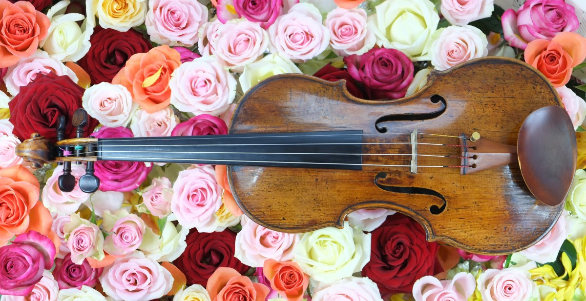

Violin

The violin is a small string instrument that produces sound from sliding a bow across the strings. It has been used in orchestras for centuries.
The violin is a small string instrument that produces sound from sliding a bow across the strings. It has been used in orchestras for centuries.